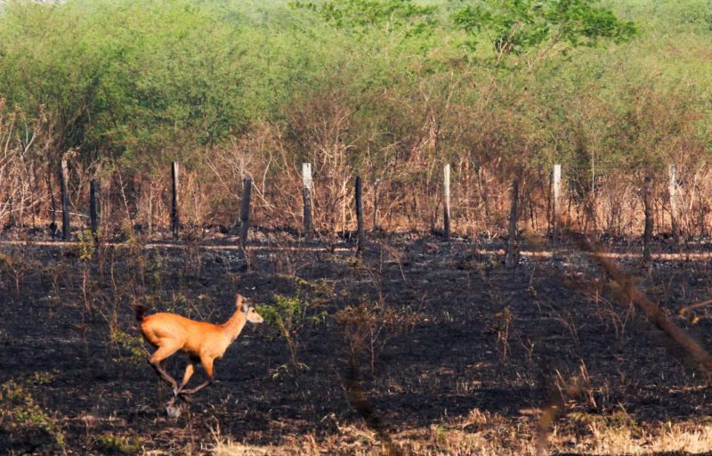
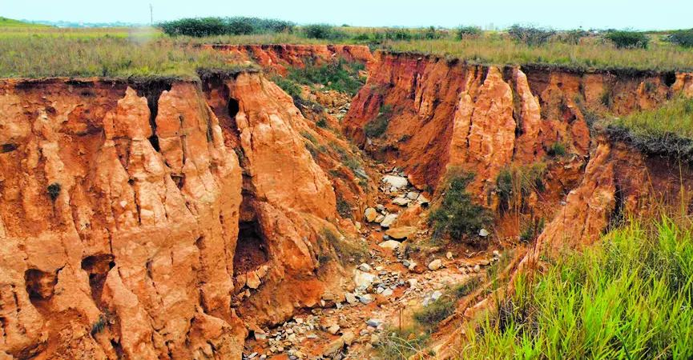
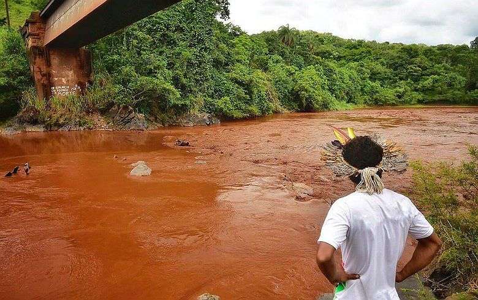
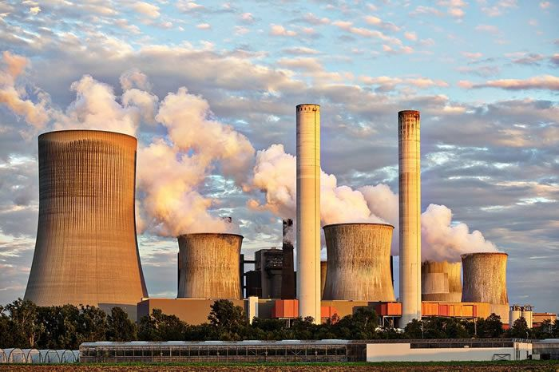
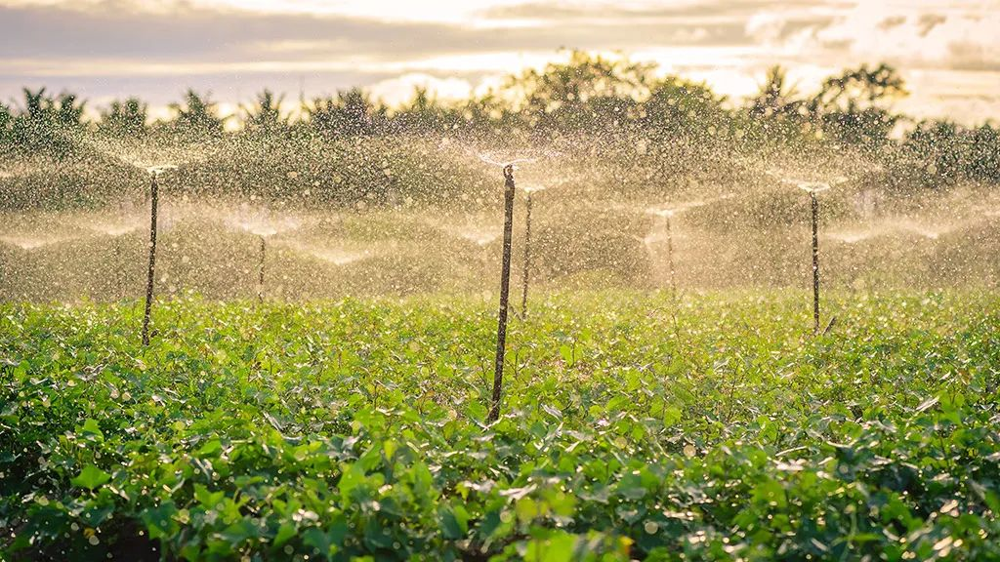

Impactos Ambientais da Extração de Matérias-Primas
A extração de matérias-primas representa a primeira e uma das mais impactantes fases do ciclo produtivo industrial. Esta etapa envolve a remoção de recursos naturais do meio ambiente, causando significativas alterações nos ecossistemas, degradação do solo, poluição da água e perda de biodiversidade. A crescente demanda por recursos impulsiona atividades extrativas cada vez mais intensivas e em áreas ambientalmente sensíveis.
75%
Degradação do Solo
Por atividades de mineração
40%
Poluição Hídrica
Originada da extração de recursos
30%
Perda de Habitats
Por desmatamento e mineração
"Não herdamos a terra de nossos antepassados, pegamos emprestada de nossos filhos" - Autor Desconheciedo
2.1 Extração de Matéria-Prima
O que é Matéria-Prima?
Matéria-prima é um material básico, em estado bruto ou minimamente processado, extraído da natureza e utilizado na produção de outros bens, seja para consumo, energia ou bens de capital. Existem três tipos principais de matéria-prima: animal, vegetal e mineral.
Extração e Impactos
Os impactos ambientais causados pela extração para uso em processos industriais incluem a contaminação do ar e da água pela emissão de poluentes e descarte de resíduos, a degradação do solo e desmatamento para extração de recursos, o esgotamento de recursos naturais não renováveis, o aumento da emissão de gases de efeito estufa e, consequentemente, as mudanças climáticas. Geram impactos ambientais significativos:
Impactos Florestais
- Desmatamento e perda de biodiversidade
- Erosão do solo e assoreamento de rios
- Alteração do ciclo hidrológico local
- Liberação de carbono armazenado
Impactos Agropecuários
- Uso intensivo de agrotóxicos e fertilizantes
- Compactação e degradação do solo
- Contaminação de recursos hídricos
- Monocultura e perda de diversidade genética
Perda de Habitat e Desmatamento
A expansão das áreas de extração para abastecer indústrias de energia, construção civil e metalurgia resulta na destruição de ecossistemas.
Erosão do Solo e Alterações Geomorfológicas
Indústrias que dependem de minérios metálicos e não metálicos (cimento, vidro, cerâmica) causam grandes movimentações de solo em suas áreas de extração.
Contaminação de Águas Superficiais e Subterrâneas
As causas da contaminação das águas superficiais e subterrâneas incluem efluentes industriais e domésticos, agricultura (fertilizantes e pesticidas), descarte inadequado de resíduos sólidos, atividades de mineração, vazamentos de combustíveis, poluição atmosférica, etc.
Emissão de Poeira e Poluentes Atmosféricos
No beneficiamento de matérias-primas para processos industriais (trituração, moagem, transporte), ocorre liberação de poeiras e gases poluentes. Exemplo: a extração e queima de carvão em Santa Catarina alimenta indústrias termoelétricas, mas libera poeira e SO₂, prejudicando a saúde pública.
Consumo Intensivo de Água e Energia
Os processos industriais exigem enorme quantidade de energia e água, desde a extração até a transformação da matéria-prima, causando impacto ambientais como escassez hídrica, emissão de gases de efeito estufa, pressão sobre rios e aquíferos. Exemplo: a indústria de alumínio consome grandes volumes de energia elétrica (produção eletrointensiva) e água para resfriamento durante a transformação da bauxita e a estima-se que a agricultura seja responsável por cerca de 70% de toda a água doce consumida no planeta
2.2 Transporte
O transporte rodoviário de cargas é essencial para os processos industriais, pois conecta a extração de matérias-primas às fábricas e garante a distribuição dos produtos finais. No entanto, esse modal traz sérios impactos ambientais.
Impactos das Emissões Veiculares
O uso intensivo de caminhões a diesel provoca a emissão de gases de efeito estufa (CO₂) e poluentes como NOx, SOx e material particulado, que contribuem para o aquecimento global, formação de chuva ácida e problemas respiratórios na população. Além disso, acidentes com veículos que transportam cargas perigosas, como combustíveis e produtos químicos, representam riscos de vazamentos e derramamentos, contaminando solos, rios e afetando a biodiversidade.
Fragmentação de Ecossistemas
Outro impacto relevante é a fragmentação de ecossistemas, já que a construção e ampliação de rodovias corta habitats naturais, aumenta o número de atropelamentos de animais silvestres e facilita o avanço do desmatamento em regiões sensíveis, como ocorre na BR-163, na Amazônia.
Transporte Rodoviário no Brasil
Mais de 60% das cargas industriais dependem das rodovias, o que gera:
- Grande consumo de combustíveis fósseis
- Altos custos ambientais e sociais
- Maior vulnerabilidade a acidentes
Alternativas Sustentáveis
Apesar de sua importância, o transporte rodoviário precisa ser complementado por alternativas mais sustentáveis, como ferrovias, hidrovias, biocombustíveis e caminhões elétricos, para reduzir os impactos ambientais associados à logística industrial.
2.3 Processamento e Manufatura
Combustíveis Fósseis e Refino
Combustíveis fósseis é a denominação dada a um grande grupo de combustíveis não renováveis e que foram formados a milhares de anos a partir de restos de animais e vegetais. Estão incluídos nestas fontes o carvão mineral, o gás natural e o petróleo e derivados, como o óleo diesel e a gasolina.
Um dos principais problemas ambientais decorrentes da utilização destes combustíveis é a poluição atmosférica causada pela emissão de gases como os óxidos de enxofre e nitrogênio e dos gases estufa, como o dióxido de carbono e o metano.
🏭 Impactos das Refinarias
Para utilização do petróleo como combustível, é necessário processos de refino do material bruto. Estas refinarias são grandes geradoras de poluição e precisam de:
- Grandes quantidades de água e energia
- Geram despejos líquidos contaminantes
- Liberam diversos gases nocivos para a atmosfera
- Produzem resíduos sólidos perigosos
♻️ Classificação de Resíduos
Os resíduos são classificados quanto aos riscos potenciais:
- Classe I (Perigosos): inflamáveis, corrosivos, reativos, tóxicos
- Classe II (Não-inertes): combustíveis, biodegradáveis ou solúveis
- Classe III (Inertes): não apresentam riscos à saúde e meio ambiente
Solventes Industriais
Os solventes são largamente utilizados em diferentes áreas industriais e domésticas, e apresentam um elevado consumo anual. No entanto, atualmente, a maioria dos solventes é ainda obtida de matérias-primas não renováveis, como o petróleo.
⚠️ Problema dos Solventes Convencionais
Um dos solventes que domina o mercado é a acetona, com um elevado leque de utilizações, contudo possui uma elevada inflamabilidade e em grande parte provém de origem petrolífera.
Alternativas Sustentáveis
Cada vez mais terão de ser procuradas bio alternativas aos solventes comuns, preparadas com recurso a processos de fabrico e matérias-primas sustentáveis, reduzindo a dependência de combustíveis fósseis e minimizando os impactos ambientais do processamento industrial.
2.4 Distribuição e Uso
Impactos do Transporte na Distribuição
O transporte rodoviário depende fortemente de combustíveis fósseis. Esse fator, por sua vez, gera impactos diretos no meio ambiente durante os processos de extração e utilização desses recursos. Ruídos, desgaste de vias automotivas, riscos de acidentes e derramamentos são possíveis consequências causadas pelo transporte rodoviário.
⚠️ Riscos de Cargas Perigosas
Cargas perigosas podem gerar vazamentos químicos, contaminação do solo e poluição de cursos d'água em caso de acidentes.
Consciência do Consumidor
Os consumidores precisam estar atentos ao longo percurso que um produto leva até chegar ao comércio. São muitos processos que exercem vários tipos de impactos sobre o meio ambiente. A avaliação do ciclo de vida envolve o impacto da emissão de gases de efeito estufa e o consumo de recursos naturais, água e energia.
💡 Uso Adequado de Produtos
O uso inadequado de produtos também afeta seu consumo energético:
- Materiais com alta condutividade térmica podem exigir mais energia para refrigeração
- Materiais isolantes leves na indústria automotiva reduzem o peso do veículo
- Consequentemente, reduz o consumo de combustível ao longo de anos de utilização
♻️ Fim do Ciclo de Vida
É importante atentar que o produto não acaba ao ser descartado:
- Ele continua seu processo podendo ser reciclado ou reaproveitado
- Para auxiliar nesse ciclo, é importante que os consumidores façam a separação básica dos resíduos
- Separação em resíduos secos e úmidos facilita o processo de reciclagem
Responsabilidade Compartilhada
A redução dos impactos ambientais na fase de distribuição e uso requer uma abordagem integrada que envolve fabricantes, distribuidores, consumidores e gestores de resíduos, promovendo práticas sustentáveis em toda a cadeia de valor do produto.
2.5 Fim de Vida e Disposição Final de Resíduos Industriais
O ciclo de vida dos produtos industriais termina em processos de disposição final, que determinam como os resíduos serão tratados. Essa etapa é crucial para minimizar impactos ambientais e sociais. Entre os principais métodos estão aterros, incineração, reciclagem e descarte informal.
🏗️ 1. Aterros Sanitários
Locais projetados para receber resíduos, cobrindo-os com terra.
Impactos Ambientais:
- Ocupação extensiva de solo, alterando a paisagem e reduzindo áreas naturais
- Produção de lixiviados (líquidos da decomposição) que podem contaminar águas superficiais e subterrâneas
- Emissão de gases, como metano (CH₄), um potente gás de efeito estufa
📍 Exemplo Real: O Aterro Bandeirantes (SP) recebe grande volume de resíduos sólidos, mas ainda enfrenta desafios no controle de lixiviados e emissões gasosas.
🔥 2. Incineração
É a queima controlada de resíduos, reduzindo seu volume .
Impactos Ambientais:
- Emissão de gases tóxicos e poluentes atmosféricos, como dioxinas, furano e CO₂
- Produção de cinzas residuais, que precisam ser descartadas adequadamente devido à toxicidade
- Alto consumo de energia
🌍 Exemplo Real: Usinas de incineração na Europa, como em Estocolmo (Suécia), usam tecnologia avançada para geração de energia, mas ainda requerem controle rigoroso de emissões.
♻️ 3. Reciclagem
Reaproveitamento de materiais para criar novos produtos.
Impactos Ambientais:
- Reduz a quantidade de resíduos em aterros e o consumo de matérias-primas naturais
- Consome energia, especialmente em processos industriais como fundição, trituração e reprocessamento
- Pode liberar poluentes se a gestão for inadequada, como resíduos tóxicos da reciclagem eletrônica
💡 Exemplo Real: A reciclagem de alumínio economiza até 95% da energia em comparação à produção a partir da bauxita, mas exige tratamento correto dos resíduos gerados.
⚠️ 4. Descarte Informal
Descarte inadequado, sem tratamento ou controle ambiental.
Impactos Ambientais:
- Vazamento de substâncias perigosas no solo e águas
- Aumento da poluição urbana, presença de resíduos em áreas públicas e rios
- Risco à saúde pública, devido à presença de materiais contaminantes ou infecciosos
🚨 Exemplo Real: Em muitas cidades brasileiras, lixões a céu aberto recebem resíduos industriais e domésticos sem tratamento, contaminando comunidades próximas.
Gestão Integrada de Resíduos
A escolha adequada do método de disposição final deve considerar o tipo de resíduo, o impacto ambiental, os custos econômicos e sociais, priorizando sempre a redução, reutilização e reciclagem antes da disposição final.